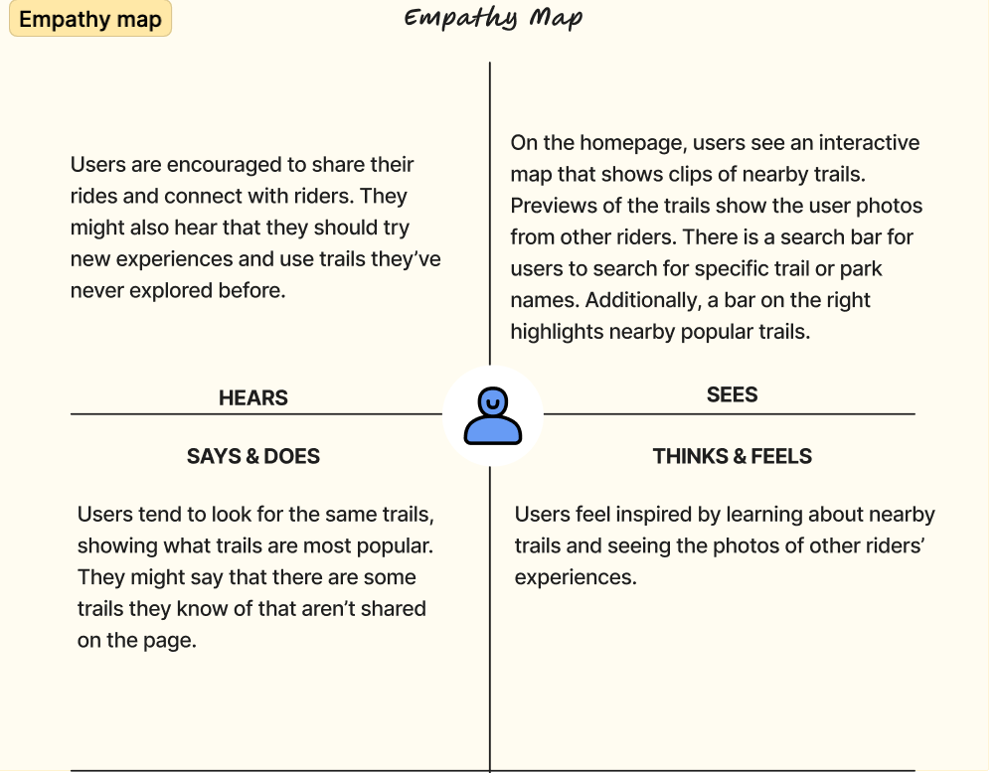
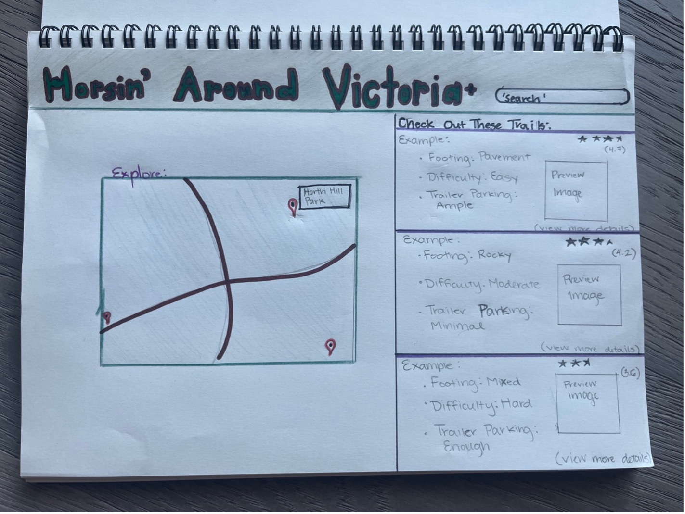

My final project!
A little bit about my project:
- My app will provide horseback riders in Victoria with a collection of trails that are accessible for horses.
- The basic overview of a trail shown will be on a 2D map and, if I had the skills, I would love to provide 3D views of trails as well so that riders could get a sense of the terrain.
- This webpage will be used by riders in the Victoria area to learn more about what trails are accessible to them and their horses.
- This app is needed for horseback riders who don't know what trails are accessible for their horses.
- To emotionally engage the users, I would like to create interactive 3D maps like I mentioned earlier. The interactive map would allow the user to view sections of the trails and the terrain. It would also be really cool to make the map interactive so that riders could connect with others' experiences as they share photos and stories of their rides.
-
- Incroporating XR would allow users to view the map in a way that traditional maps can't. They will be able to see the trail conditions better, helping them make more informed decisions for where to take their horses.
- XR and the ability to share stories on an interactive map creates opportunity for community building and connects riders through their shared experiences.
- XR can also help riders prepare better for their trail rides, increasing safety for riders and their horses.
-
- Using 3D is certainly useful for parts of this project. For one, it gives riders a realistic preview of the trails, like elevation and footing, which is helpful for preparation.
- 3D also helps to make a more interactive map, increasing wepage usage. The more riders use the webpage and share the experiences, the more useful the page becomes.
- However, using 3D definitely makes for a more time consuming design and implementation process, and may make it harder for some users to navigate the site.
-
- Using AR could allow riders to use their smartphones for real-time directions. This would be beneficial if riders encounter fallen trees or other obstacles that require a detour from the main trial.
- Mixed reality could show real-time weather conditions on a user's map, increasing safety.
- VR can be used to show the rider immersive previews of the trails, helping them to best prepare for the terrain.
-
- Yes, this idea already exists in 2D. Most trail maps, either printed or online, will say whether they are horse accessible or not. Rider forums are also places for riders to share photos of their rides and trail conditions. However, this idea doesn't necessarily exist as an amalgamated webpage form.
- It's likely that a 3D version of this idea exists, which allows people to view and interact with the map to see the terrain. However, this might not exist specifically for the intent of trail riding horses.
- If I only made this idea in 2D I wouldn't be able to provide the same interactive experience for users. They wouldn't be able to explore and get a preview of a trail's terrain in the same way.
-
- If I create a useful website that helps riders better prepare for the trail, I will get more interaction and engagement.
- If I have a simplified search bar and filters that helps riders find the appropriate trails for their level and interests, then the site becomes more useful for its users.
- Making an attractive and engaging website will make users share the page to their friends, increasing usage.
- If the site provides useful information that helps riders better prepare for the trails, this website will help reduce injuries and accidents.
- If I name the site "Horsing Around Victoria," then the site becomes findable for those interested in trail riding around Victoria.
- If I make the site sizable to any screen then it will be used more often as it remains accessible on the trail.
- Empathy Map

- Data Model Idea:
- Trail
- Name: String
- Description: String
- Location: String
- Difficulty: String
- GoogleMapsLink: String
- Length: Number (in kilometers)
- Duration: String (estimated time to complete)
- Best Season: String
- Elevation Gain: Number (in meters)
- User
- Username: String
- Email: String
- Favorite Trails: Array of trail IDs
- Review
- User Id: User ID
- Trail Id: Trail ID
- Rating: Number (e.g., 1-5)
- Comment: String
- Relationships
- User to Trails: Many-to-Many (a user can have many favorite trails and a trail can be favorited by many users).
- Trail to Reviews: One-to-Many (a trail can have many reviews, each review is associated with one trail).
Wireframe (click to switch images)
